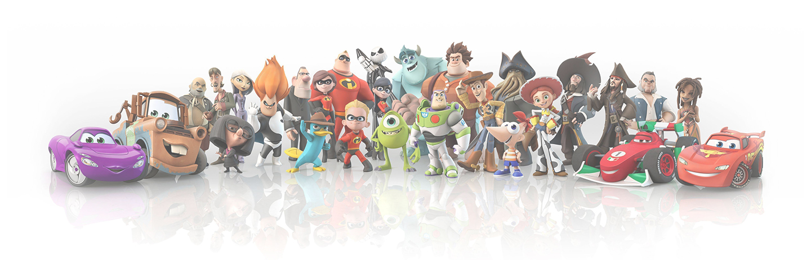

PIXAR
A cowboy doll is profoundly threatened and jealous when a new spaceman figure supplants him as top toy in a
boy's room. A little boy named Andy loves to be in his room, playing with his toys, especially his doll named
"Woody". But, what do the toys do when Andy is not with them, they come to life.
"Monsters, Inc." is an animated film about two monsters, Sulley and his best friend, Mike. They work for
Monsters, Inc., the largest scream-processing factory in the monster world. When a little girl, Boo, follows
Sulley back into the monster world, he finds his career in jeopardy and his life turned upside down.
In this lauded Pixar animated film, married superheroes Mr. Incredible and Elastigirl are forced to assume
mundane lives as Bob and Helen Parr after all super-powered activities have been banned by the government.
A rat who can cook makes an unusual alliance with a young kitchen worker at a famous restaurant. A rat named
Remy dreams of becoming a great French chef despite his family's wishes and the obvious problem of being a rat
in a decidedly rodent-phobic profession.
The film centers on an elderly widower named Carl Fredricksen and an earnest boy named Russell; by tying
thousands of balloons to his house, Carl sets out to fulfill his dream to see the wilds
of South America and complete a promise made to his late wife, Ellie.
The story follows a 12-year-old boy named Miguel who is accidentally transported to the Land of the Dead, where
he seeks the help of his deceased musician great-great-grandfather to return him to his family among the living
and to reverse his family's ban on music.